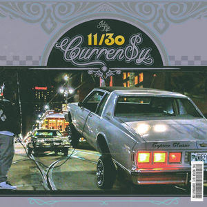

For those unfamiliar, Curren$y is an emcee and marijuana advocate out of New Orleans, Louisiana. He got started in 2002 after signing with Master P's No Limit Records as a part of the 504 Boyz collective.
In 2004, he joined Cash Money Records and Lil Wayne’s Young Money Entertainment, where he was featured on some of Weezy’s mixtapes such as Dedication and Dedication 2. While still with Young Money, Curren$y started clothing-turned-music-endeavour Fly Society with skater Terry Kennedy. He left Young Money in 2007, and since then has released several albums and collaborated with artists like Snoop, Mos Def, Wiz Khalifa, Trinidad James and many more.
In 2013, Curren$y released both the mixtape New Jet City and The Stage EP with Smoke DZA and Harry Fraud. Stay tuned for updates on Spitta's career, y'all, and hit up jetlifeapparel.com for more information.
Winning
Known for his work ethic, here are some of his more recent projects from the New Orleans rapper.
| Date Released | Name | Artwork |
|---|---|---|
| 9.30.16 | Andretti 9/30 | |
| 10.30.16 | Andretti 10/30 | |
| 11.30.16 | Andretti 11/30 |  |
| 12.30.16 | Andretti 12/30 |